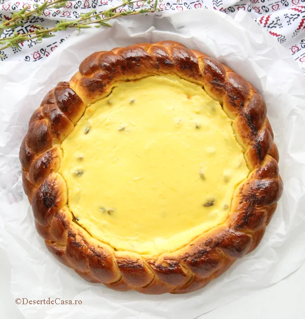

180,00 lei
Nu conteaza ca a trecut sezonul pascal,dar trebuie sa incerci aceasta pasca minunata cu multa branza dulce si stafide! Combinatia dintre aluatul pufos,umplutura cremoasa de branza dulce si stafide aduce o bucurie mare pentru fiecare(nu trebuie sa existe comentarii despre cum acest produs nu trebuie sa se vanda vara ca se supara briosica din spate, adica poate fi un desert bun pentru orice ocazie nu..?)